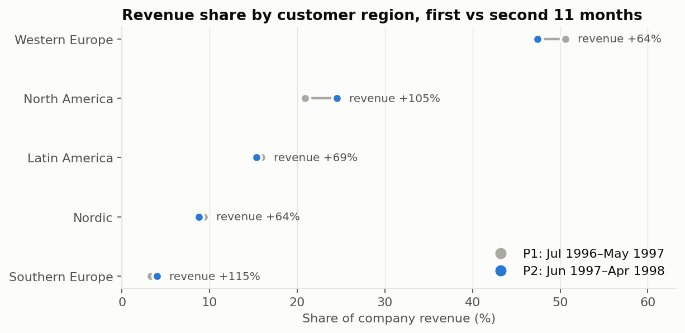
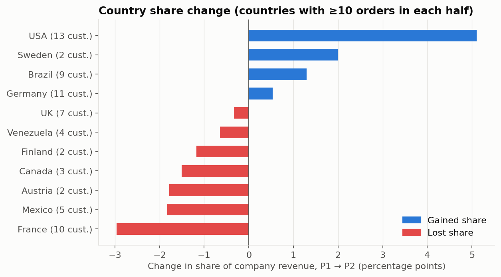
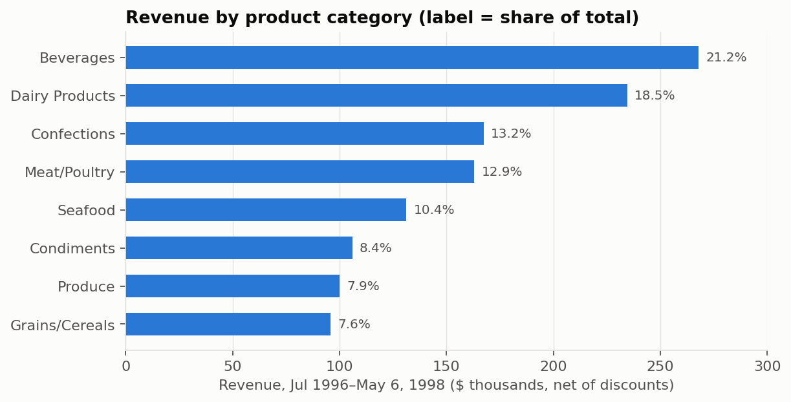
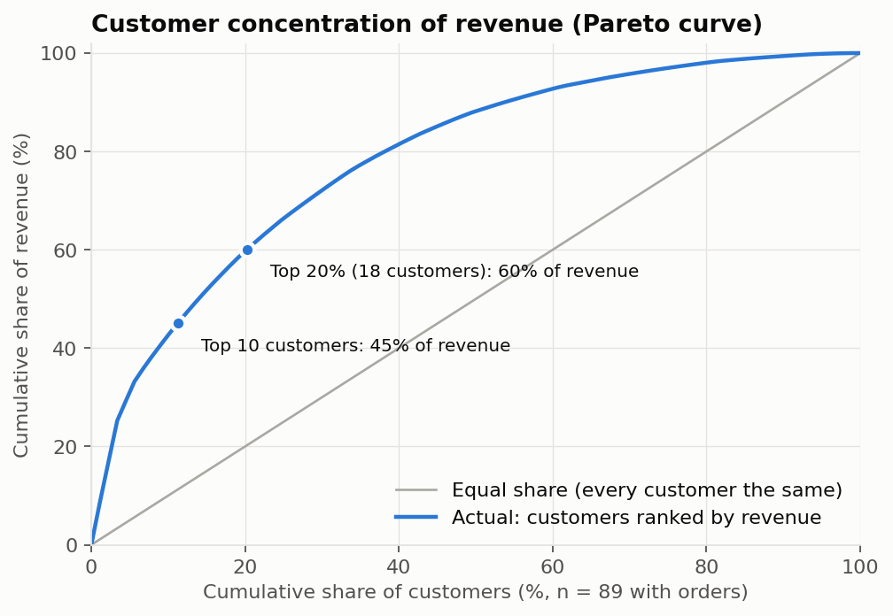
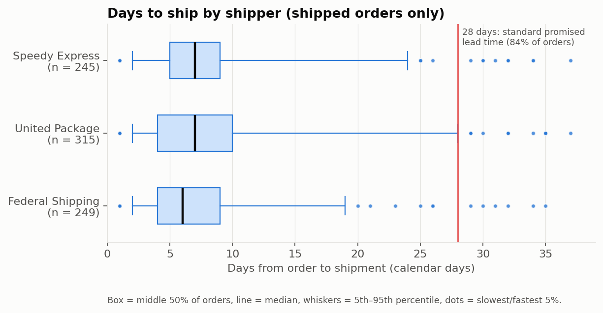

Northwind sales review: markets, concentration and shipping
Three questions for planning next year's sales and operations, answered from 830 orders placed between July 4, 1996 and May 6, 1998.
Summary
- Markets. Revenue grew 75% between the two halves of the data. North America gained the most share of revenue (+3.6 pp), led by the USA; Western Europe lost the most (−3.2 pp).
- Categories and concentration. 52.9% of revenue comes from three categories, and 45.0% from just 10 customers. The top three customers alone bring in 25.2%.
- Shipping. The shippers are alike on typical speed but not on slow orders: Federal Shipping ships 90% of orders within 12 days. Orders promised in 14 days are late far more often (17.6%) than the rest.
Q1
Which customer markets are growing or declining, and where should sales efforts be focused?
Why it matters
Sales time and marketing money are limited. Knowing which customer markets are taking a bigger slice of the business, and which are slipping, tells the sales team where extra effort is most likely to pay off and which markets need a closer look before they shrink further.
Approach
Revenue is UnitPrice × Quantity × (1 − Discount) from each order
line, joined to the order and then to the customer. A market is the customer's country
(Customers.Country), grouped into five regions.
The data covers only part of 1996 and part of 1998, so calendar years can't be compared. Instead I split the data into two equal halves: P1 = Jul 1996–May 1997 (307 orders) and P2 = Jun 1997–Apr 1998 (509 orders). The last 14 orders, placed after P2 ended and up to May 6, 1998, are left out.
Because the whole company grew 75% between the halves, almost every market grew in dollars. So the headline measure is each market's change in share of company revenue (in percentage points, pp). Dollar growth is shown alongside. The country chart includes only countries with at least 10 orders in each half; the full table below it lists all 21 countries.

| Region | Customers | Orders P1 | Orders P2 | Revenue P1 | Revenue P2 | Growth | Share P1 | Share P2 | Share change |
|---|---|---|---|---|---|---|---|---|---|
| Western Europe | 36 | 138 | 212 | $229k | $376k | +64% | 50.6% | 47.4% | −3.2 pp |
| North America | 16 | 51 | 98 | $95k | $195k | +105% | 20.9% | 24.5% | +3.6 pp |
| Latin America | 21 | 63 | 106 | $72k | $122k | +69% | 15.9% | 15.4% | −0.5 pp |
| Nordic | 7 | 30 | 53 | $42k | $70k | +64% | 9.3% | 8.8% | −0.6 pp |
| Southern Europe | 9 | 25 | 40 | $15k | $32k | +115% | 3.3% | 4.0% | +0.7 pp |

Country table
| Country | Customers | Orders P1 | Orders P2 | Revenue growth | Share change |
|---|---|---|---|---|---|
| USA | 13 | 39 | 80 | +131% | +5.1 pp |
| Sweden | 2 | 12 | 25 | +188% | +2.0 pp |
| Brazil | 9 | 27 | 56 | +105% | +1.3 pp |
| Germany | 11 | 47 | 71 | +81% | +0.5 pp |
| UK | 7 | 24 | 32 | +63% | −0.3 pp |
| Venezuela | 4 | 18 | 26 | +52% | −0.6 pp |
| Finland | 2 | 11 | 12 | −15% | −1.2 pp |
| Canada | 3 | 12 | 18 | +22% | −1.5 pp |
| Austria | 2 | 16 | 23 | +47% | −1.8 pp |
| Mexico | 5 | 14 | 12 | −31% | −1.8 pp |
| France | 10 | 30 | 45 | +13% | −3.0 pp |
All 21 countries, sorted by revenue growth
| Country | Customers | Orders P1 | Orders P2 | Revenue P1 | Revenue P2 | Growth | Share change | In chart (≥10 orders each half) |
|---|---|---|---|---|---|---|---|---|
| Mexico | 5 | 14 | 12 | $14k | $9k | −31% | −1.8 pp | yes |
| Portugal | 2 | 9 | 5 | $7k | $6k | −23% | −0.9 pp | no |
| Finland | 2 | 11 | 12 | $10k | $9k | −15% | −1.2 pp | yes |
| Denmark | 2 | 5 | 12 | $17k | $16k | −5% | −1.7 pp | no |
| France | 10 | 30 | 45 | $38k | $42k | +13% | −3.0 pp | yes |
| Canada | 3 | 12 | 18 | $23k | $28k | +22% | −1.5 pp | yes |
| Austria | 2 | 16 | 23 | $50k | $73k | +47% | −1.8 pp | yes |
| Venezuela | 4 | 18 | 26 | $22k | $34k | +52% | −0.6 pp | yes |
| Belgium | 2 | 6 | 13 | $13k | $20k | +53% | −0.4 pp | no |
| UK | 7 | 24 | 32 | $22k | $37k | +63% | −0.3 pp | yes |
| Germany | 11 | 47 | 71 | $80k | $145k | +81% | +0.5 pp | yes |
| Switzerland | 2 | 6 | 11 | $10k | $21k | +100% | +0.3 pp | no |
| Brazil | 9 | 27 | 56 | $35k | $72k | +105% | +1.3 pp | yes |
| USA | 13 | 39 | 80 | $72k | $167k | +131% | +5.1 pp | yes |
| Ireland | 1 | 8 | 11 | $15k | $35k | +133% | +1.1 pp | no |
| Sweden | 2 | 12 | 25 | $14k | $40k | +188% | +2.0 pp | yes |
| Italy | 3 | 8 | 20 | $4k | $12k | +242% | +0.7 pp | no |
| Spain | 4 | 8 | 15 | $4k | $14k | +250% | +0.9 pp | no |
| Norway | 1 | 2 | 4 | $1k | $4k | +256% | +0.3 pp | no |
| Argentina | 3 | 4 | 12 | $1k | $7k | +539% | +0.6 pp | no |
| Poland | 1 | 1 | 6 | $0k | $3k | +569% | +0.3 pp | no |
Main finding
Revenue grew 75% from P1 to P2 ($453k to $794k). Measured by share, North America gained the most: 20.9% to 24.5% (+3.6 pp), with revenue up 105%. Western Europe is still the largest region at 47.4% of revenue but lost 3.2 pp.
By country, the USA gained the most share (+5.1 pp) and France lost the most (−3.0 pp, with revenue up only 13%). Across all 21 countries, 4 had lower revenue in P2 than in P1: Mexico (−31%), Portugal (−23%), Finland (−15%) and Denmark (−5%). Portugal and Denmark had fewer than 10 orders in at least one half, so their drops rest on very few orders.
Business implication
North America, and the USA in particular, is where demand is rising fastest, so it is the strongest case for extra sales capacity. Among the countries with enough orders to show in the chart, those gaining share are USA, Sweden, Brazil and Germany. France and the countries where revenue fell (Mexico, Portugal, Finland and Denmark) need a customer-by-customer review to find out who is buying less, and why, before deciding whether to rebuild or cut effort there.
Caveats and sample sizes
- P1 and P2 are equal-length halves, not calendar years. Each holds one of every calendar month except that P1 includes a May and P2 a June.
- Region groupings are my own judgment. Latin America: Argentina, Brazil, Mexico and Venezuela; Nordic: Denmark, Finland, Norway and Sweden; North America: Canada and USA; Southern Europe: Italy, Portugal and Spain; Western Europe: Austria, Belgium, France, Germany, Ireland, Poland, Switzerland and UK.
- Austria, Finland and Sweden have at most 2 customers each, so their changes reflect individual accounts more than whole markets.
- 4 orders (10248, 10249, 10260, 10808) ship to a country different from the customer's own. Counting them by ship-to country instead moves any region's share by at most 0.84 pp and changes no region from gaining to losing.
- Share of revenue depends on a few large orders in small markets, so a single big order can swing a country's result.
Q2
Which product categories drive the most revenue, and how concentrated are sales?
Why it matters
Knowing which categories bring in the money guides stock, purchasing and promotion decisions. Knowing how much revenue depends on a handful of customers measures risk: if a few accounts make up most of the business, losing one of them hurts, and those accounts deserve extra attention.
Approach
Order lines are joined to products and then to categories; revenue is
UnitPrice × Quantity × (1 − Discount). The window is the whole dataset,
July 4, 1996 to May 6, 1998. No years are compared here, so
the partial years don't distort the totals. As a stability check, category shares are also
compared between the two halves used in Q1 (P1 = Jul 1996–May 1997, P2 =
Jun 1997–Apr 1998).
For concentration, the 89 customers with at least one order are ranked by total revenue. The Pareto curve shows what share of revenue the top X% of customers bring in. The summary numbers are the share held by the top 10 customers and by the top 20% (18 customers).

| Category | Products | Revenue | Share | Share P1 | Share P2 | Share change |
|---|---|---|---|---|---|---|
| Beverages | 12 | $268k | 21.2% | 23.3% | 19.9% | −3.5 pp |
| Dairy Products | 10 | $235k | 18.5% | 18.0% | 19.2% | +1.2 pp |
| Confections | 13 | $167k | 13.2% | 15.1% | 12.2% | −2.9 pp |
| Meat/Poultry | 6 | $163k | 12.9% | 12.4% | 13.0% | +0.6 pp |
| Seafood | 12 | $131k | 10.4% | 8.1% | 11.7% | +3.6 pp |
| Condiments | 12 | $106k | 8.4% | 9.3% | 8.0% | −1.3 pp |
| Produce | 5 | $100k | 7.9% | 7.0% | 8.4% | +1.4 pp |
| Grains/Cereals | 7 | $96k | 7.6% | 6.8% | 7.6% | +0.8 pp |

Top customers table
| Rank | Customer | Country | Revenue | Orders | Share |
|---|---|---|---|---|---|
| 1 | QUICK-Stop | Germany | $110k | 28 | 8.7% |
| 2 | Ernst Handel | Austria | $105k | 30 | 8.3% |
| 3 | Save-a-lot Markets | USA | $104k | 31 | 8.2% |
| 4 | Rattlesnake Canyon Grocery | USA | $51k | 18 | 4.0% |
| 5 | Hungry Owl All-Night Grocers | Ireland | $50k | 19 | 3.9% |
| 6 | Hanari Carnes | Brazil | $33k | 14 | 2.6% |
| 7 | Königlich Essen | Germany | $31k | 14 | 2.4% |
| 8 | Folk och fä HB | Sweden | $30k | 19 | 2.3% |
| 9 | Mère Paillarde | Canada | $29k | 13 | 2.3% |
| 10 | White Clover Markets | USA | $27k | 14 | 2.2% |
Main finding
Beverages, Dairy Products and Confections together bring in 52.9% of revenue, and Beverages alone 21.2%. The mix is shifting: between the halves Beverages lost 3.5 pp of share and Seafood gained +3.6 pp.
Customer revenue is heavily concentrated. The top 10 of 89 customers bring in 45.0% of revenue and the top 20% bring in 60.1%. Just 13 customers make up half of all revenue, while the smallest 44 together make up 11.5%. The three largest, QUICK-Stop, Ernst Handel and Save-a-lot Markets, each account for 8.2% to 8.7%.
Business implication
Losing any one of the three largest customers would remove roughly 8% to 9% of revenue, so these accounts justify a named account manager and early warning when their order frequency drops. On the product side, stock and promotion priority belongs with Beverages, Dairy Products and Confections, while the falling share of Beverages is worth checking for pricing or competition problems.
Caveats and sample sizes
- Totals cover the whole period, so customers who started buying later look smaller. 7 customers placed their first order after P1.
- 2 customers in the database never ordered and are excluded from the 89.
- Revenue is net of discounts and excludes freight.
Q3
Where are the largest shipping delays, and which operational areas need improvement?
Why it matters
Late or slow shipments cost repeat business and lead to rush freight and complaints. Knowing whether delays come from a particular carrier or from how delivery dates are promised tells operations which lever to pull.
Approach
Each order is joined to its shipper (Orders.ShipVia → Shippers).
Two measures are used:
- Days to ship =
ShippedDate − OrderDatein calendar days (headline). I report the median, the 90th percentile, and the share of orders taking more than 14 days. - Late rate = share of orders shipped after their
RequiredDate.
All 809 shipped orders are used. The 21 orders with no ship date (placed April 8, 1998 to May 6, 1998) are excluded from timing and listed separately as open. 95% ranges come from a Wilson interval for shares and from a bootstrap for the median.

| Shipper | Shipped | Open | Median days | 90th pct days | Over 14 days (95% range) | Late (95% range) | Late orders |
|---|---|---|---|---|---|---|---|
| Federal Shipping | 249 | 6 | 6 | 12 | 7.6% (4.9–11.6) | 3.6% (1.9–6.7) | 9 |
| Speedy Express | 245 | 4 | 7 | 18 | 12.2% (8.7–16.9) | 4.9% (2.8–8.4) | 12 |
| United Package | 315 | 11 | 7 | 21.6 | 14.9% (11.4–19.3) | 5.1% (3.2–8.1) | 16 |
| Promised lead time | Shipped | Late | Late rate |
|---|---|---|---|
| 14 days | 68 | 12 | 17.6% |
| 28 days | 682 | 25 | 3.7% |
| 42 days | 59 | 0 | 0.0% |
Main finding
Half of all orders ship within 7 days and 90% within 18 days. Overall, 4.6% (37 of 809) shipped after the required date. The shippers are alike on typical speed (medians 6 to 7 days) but differ in their slow tail: Federal Shipping ships 90% of orders within 12 days, against 21.6 days for United Package. Only 7.6% of its orders take more than 14 days, against 14.9%.
Late rates (Speedy Express 4.9%; United Package 5.1%; Federal Shipping 3.6%) fall within each other’s 95% ranges, so the data cannot separate the shippers on lateness. The promised lead time matters more: 17.6% of 14-day orders shipped late, against 3.7% of 28-day orders.
Business implication
The problem is the slow tail and tight promises, not average speed. Routing time-sensitive orders to Federal Shipping and asking United Package about its slowest shipments could cut the long waits. Promising a 14-day lead time should be checked against what the warehouse can actually ship in time. The gap in slow shipments is borderline (the 95% ranges just overlap), so treat it as a lead worth testing, not proof. A trial that routes urgent orders to Federal Shipping and tracks the results would settle it.
Caveats and sample sizes
- Late counts per shipper are small (9 to 16), which is why the late-rate ranges are wide.
- ShippedDate is when the order left the warehouse, not when the customer received it.
- None of the 21 open orders was past its required date when the data ends (0 overdue), but some may still turn late.
- Days are calendar days; weekends and holidays are not removed.